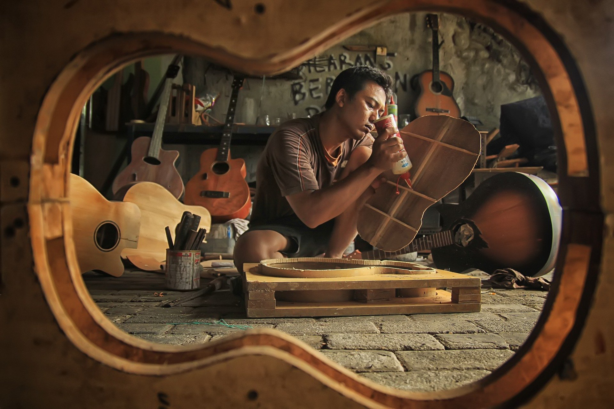
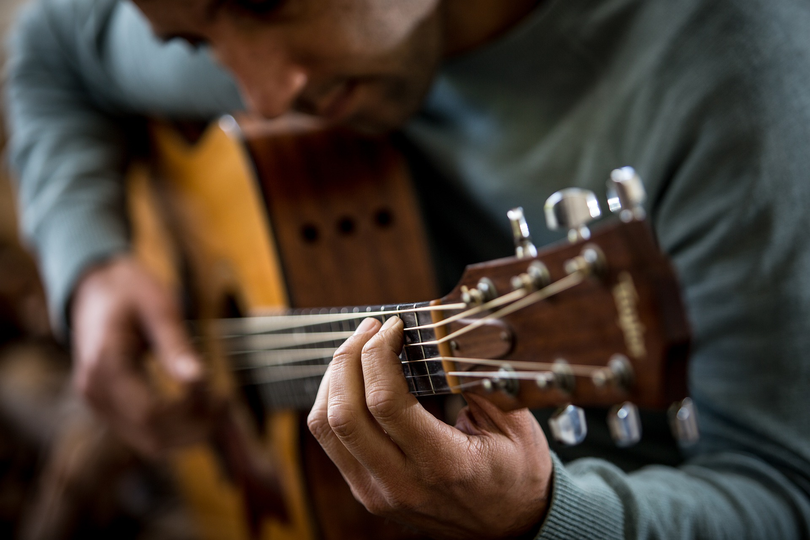

Instrument
Bien choisir sa guitare pour une meilleur pratique.
Son
Trouver le son d'ampli parfait pour jouer ses morceaux.

Pratique de l'instrument
Un entraînement régulier pour une progression rapide.

Le rythme
Le ménétronome pour garder le rythme.
Théorie de la musique
Le solfège pour mieux connaître l'instrument.

Playback
Jouer par dessus les morceaux pour se perfectionner.

Jouer entre amis
Faire un jam avec ses amis pour mettre à profit son apprentissage.

Concert
Jouer devant la foule pour réunir un public.